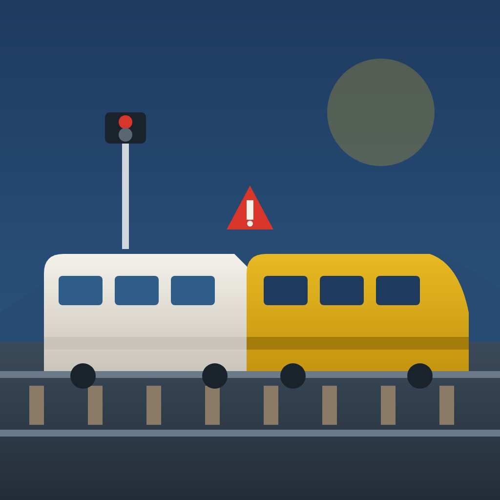

World

Toledo high-speed collision raises questions over Spanish rail control ahead of election
A Renfe high-speed train hit a stationary Iryo train near Urda, Toledo, on 28 October, killing at least 69 people, and the minister blames a control-centre decision as Spain prepares to vote.
Abstract
On 28 October 2026 a Renfe high-speed train hit the back of a stationary Iryo train near Urda, in the province of Toledo[1,2,3]. The most widely reported death toll was 69[1,4,5]. According to Transport Minister Óscar Puente, a computer failure disabled the LZB automatic train-protection system at about 8:30, and traffic management passed to the control centre at Madrid's Atocha station[1,3,6,7]. A controller there told the AVE driver to resume at normal speed, and the collision came minutes after the Iryo driver called at 8:48 to say her train was still stationary[3,8]. Puente called the decision "inexplicable" and mistaken and named one person as responsible[3,9]. Isabel Pardo de Vera, a former president of Adif, said the government cannot talk about human error after what it has done with maintenance and safety[10]. The LZB dated from 1992 and was still in service in January 2026, although a replacement contract awarded in September 2021 allowed 52 months[11,12,13]. The crash was the second deadly accident on the line in nine months, after Adamuz, where 46 people died[4,14,15,16]. It came one month before a general election[2]. The radio exchanges are known only from published excerpts, and reported figures for the death toll and the speed of impact differ[1,6,8,17,18].
Key points
- A Renfe train hit a stationary Iryo train near Urda at about 8:53 on 28 October 2026, and the most widely reported death toll was 69[1,2,3,4,5].
- The Iryo driver said at 8:48 that her train was still stopped; five minutes later the AVE hit it, roughly 25 kilometres after being authorised to proceed[3].
- The LZB system was installed when the Madrid–Seville line opened in 1992, and a replacement contract awarded in September 2021 allowed 52 months[11,12,19].
- Puente blamed a mistaken decision by one person in the Adif control centre, while Pardo de Vera said the government cannot speak of human error[3,9,10].
- The crash was the second deadly accident on the line in nine months; the Adamuz derailment on 18 January killed 46 people[4,14,15,16].
- The collision happened one month before the general election, which Royal Decree 806/2026 set for 29 November[2,20].
References
- Audio recordings reveal decisions made moments before deadly train crash in Spain. NBC News; 29 Oct 2026. News report✓ Link checkedSupports the 8:30 system failure, the audio quotes, the 8:53 collision, 69 dead, 67 missing and Fátima Báñez among the victims. ↩
- Spain's deadly train crash redraws electoral battle lines. Al Jazeera; 30 Oct 2026. News report✓ Link checkedArchived copySupports the route and time of the crash, Adif's role, ERTMS, Angrois, passenger numbers, the January survey, the political reactions, the protests, Yolanda Román's analysis and the poll figures. ↩
- Spain train crash: What happened in the 17 minutes before the collision?. Euronews; 29 Oct 2026. News report✓ Link checkedArchived copySupports the minute-by-minute timeline, the 63 km section, six trains, the passenger numbers, kilometre 118, more than 100 injured and the Orgaz court investigation. ↩
- Spain: minute of silence for train crash victims as king visits hospital. Euronews; 29 Oct 2026. News report✓ Link checkedArchived copySupports the carriages down the embankment, 69 dead, about 50 still in hospital, the King's and Feijóo's visits, and the second disaster in nine months. ↩
- Spain demands answers as train disaster toll rises. France 24; 30 Oct 2026. News reportSite blocks checksSupports the toll of 69 and the description as one of Europe's deadliest rail disasters this century. ↩
- Puente sitúa el foco del accidente de Urda en el centro de control de Adif y revela que el AVE superó los 160 km/h antes de la colisión. La Cerca; 30 Oct 2026. News report✓ Link checkedArchived copySupports Puente's statements on the control centre, the 63 km section, speed above 160 km/h, the Iryo message ignored and a toll possibly above 70. ↩
- El papel del centro de control de Adif en el accidente de Urda pone en duda su gestión de la alta velocidad. infoLibre; 29 Oct 2026. News report✓ Link checkedSupports the Atocha control centre taking over after the LZB failure and its central role in high-speed traffic management. ↩
- AUDIOS: El centro de control de Adif, a los maquinistas del AVE y el Iryo: "Reanude con marcha normal". elDiario.es; 28 Oct 2026. News report✓ Link checkedSupports the transcript of instructions under BSL, the controller's reply to the Iryo driver, and the 8:54 impact time. ↩
- Puente señala a "una persona" del centro de control como responsable del accidente de Urda. Libertad Digital; 28 Oct 2026. News report✓ Link checkedSupports Puente's quotes on LZB, "errónea", "una persona", the system being reliable and safe, and the very low probability of an accident. ↩
- Isabel Pardo de Vera, expresidenta de Adif, sobre Urda: "El Gobierno no puede hablar de error humano con su gestión". El Progreso; 29 Oct 2026. News report✓ Link checkedSupports Pardo de Vera's quotes, the September 2021 award and the January 2026 completion target. ↩
- El sistema LZB que ha fallado en el accidente de Toledo debería haber sido sustituido en su totalidad por ERTMS 2 en 2026. Xataka; 28 Oct 2026. News report✓ Link checkedSupports the 1992 LZB installation, the suppliers, reduced component production, robustness, the €108 million budget and the slipping timeline. ↩
- Las razones que han impedido usar ya el sistema ERTMS en el recorrido Madrid-Sevilla pese a las caídas del LZB. Telecinco; 29 Oct 2026. News reportSite blocks checksSupports the cancelled first tender, the November 2020 restart, the Thales España contract of about €93.8 million over 52 months, NextGenerationEU funding and Puente's quote on LZB no longer being made. ↩
- Óscar Puente detalla las obras, revisiones e inspecciones realizadas en el tramo de vía de Adamuz desde su renovación. La Moncloa, Government of Spain; 23 Jan 2026. Press release✓ Link checkedArchived copySupports the €104.72 million for ERTMS installation and the confirmation that LZB was still in service. ↩
- 'Inexplicable' order probed as cause of train crash that killed at least 69: Official. ABC News; 29 Oct 2026. News report✓ Link checkedArchived copySupports the passenger counts (397 and 146), the injury figures, six trains halted, the downward revision from 74 and the second crash on the same line. ↩
- 2026 Adamuz rail disaster. Wikipedia. Reference work✓ Link checkedArchived copySupports the date, place, trains involved and 46 deaths in the Adamuz accident. ↩
- La CIAF remarca la hipótesis de la rotura de carril como causa del descarrilamiento y posterior colisión en Adamuz. Última Hora; 28 Apr 2026. News report✓ Link checkedArchived copySupports the CIAF's provisional finding of a broken rail at km 318.681, no train faults, the speeds of both trains, 46 deaths and the provisional nature of the findings. ↩
- Spain's transport minister blames rail crash on 'inexplicable' human error. The Local Spain; 28 Oct 2026. News report✓ Link checkedSupports the 69 km outage, the 25 km travelled, the impact speed of about 200 km/h and Puente's quote on time to verify the error. ↩
- Minuto a minuto del accidente de Toledo: reconstrucción del siniestro inexplicable entre un tren AVE y un tren Iryo. Xataka; 29 Oct 2026. News report✓ Link checkedSupports the 69 km section, the speed apparently above 100 km/h, and the order to run normally despite a red signal instead of cautious running. ↩
- Madrid–Seville high-speed rail line. Wikipedia. Reference work✓ Link checkedArchived copySupports the opening date of 21 April 1992, Expo '92, the length of 471.8 km and the German-derived signalling. ↩
- Elecciones Generales de 29 de noviembre 2026. Instituto Nacional de Estadística (INE); Oct 2026. Official report✓ Link checkedArchived copySupports Royal Decree 806/2026 of 5 October, its publication on 6 October and the 29 November election date. ↩
A rear-end collision on the Madrid to Seville line
At 8:53 on the morning of Wednesday 28 October 2026, a high-speed train run by the state-owned operator Renfe hit the back of a stationary train belonging to the private operator Iryo near Urda, in the central Spanish province of Toledo[1,2,3]. Both trains had left Madrid for Seville and were on the same track[2,3].
The most widely reported death toll was 69[1,4,5]. France 24 described the crash as one of Europe's deadliest rail disasters this century[5]. Prime Minister Pedro Sánchez said the dead might include people of up to 27 nationalities[6]. Royal Decree 949/2026 declared three days of official mourning[7].
It was the second deadly accident on the same line in nine months[4,8]. It also happened one month before a general election[2].
Seventeen minutes of radio exchanges with the Atocha control centre
According to Transport Minister Óscar Puente, the sequence began at about 8:30, when a computer failure disabled the LZB automatic train-protection system on a stretch of the line and stopped several trains[1,3]. With the automatic system down, traffic management passed to the control centre at Madrid's Atocha station, which is run by Adif, the state company that manages Spain's rail infrastructure[2,3,9].
According to the transcript published by elDiario.es, between 8:31 and 8:36 the controller told the AVE driver to disconnect and reconnect the LZB and to resume at normal speed under the protection of the trackside block signalling system[10]. At 8:41 the Iryo driver reported that her train was still stopped on the approach to Urda because of a loss of transmission, and the controller authorised her to move on[3]. At 8:48 she called again to say the train was still stationary because the LZB could not be restarted[3].
Five minutes later the AVE hit the Iryo train from behind, roughly 25 kilometres after it had been authorised to proceed[3]. Puente said the AVE was travelling at more than 160 km/h before the impact, whereas AFP reported an impact speed of about 200 km/h[11,12]. Puente said the Iryo driver had told the control centre that she could not move, and that the centre "recibió el mensaje, pero no tomó ninguna acción" (received the message but took no action)[11].
An ageing signalling system and a delayed replacement
LZB is a train-control system derived from German technology that supervises a train's speed continuously[13,14]. Xataka reported that LZB was installed when the Madrid–Seville line opened on 21 April 1992 and that manufacturers have cut production of its components[15,16]. Xataka also noted that LZB is still regarded as one of the most robust safety systems in Europe[16].
Telecinco reported that Adif awarded the main contract to Thales España in September 2021 for about €93.8 million, with 52 months to complete the work[17]. Xataka gave a different budget: it reported that the renovation was approved in 2020 at €108 million, with the target later moved to sometime in 2026[16]. A government note from January 2026 listed €104.72 million for ERTMS installation and confirmed that LZB was still in service[18].
Puente has said the system needed replacing "no porque no sea bueno, sino porque ya no se fabrica", meaning not because it was deficient but because it is no longer made[17]. Isabel Pardo de Vera, who was president of Adif from 2018 to 2021, said she had left the contract tendered and awarded in September 2021 and that it should have been finished long ago, since its 52-month period ran out in January 2026[19,20]. "Si está dando problemas lo prudente es restringir la circulación," she said, meaning that if the system was malfunctioning, the prudent course was to restrict traffic[19].
Competing accounts of responsibility and the election campaign
Puente has said that the evidence pointed to a failure at Adif's command and control centre[11]. He called the decision to let the AVE move on "inexplicable" and "errónea" (mistaken), and named "una persona" (one person) in the centre as responsible[3,21]. He has also admitted that what happened in the 17 minutes before the collision is not fully known[22]. The Guardia Civil questioned the operator on the day of the crash, and he has since used his right not to make further statements[23].
El Español, citing sources at the prime minister's office, reported that the government rejects any political responsibility on Puente's part[24]. By 30 October Sánchez was acknowledging "una confianza quebrada en el sistema de alta velocidad en nuestro país" (a broken trust in the country's high-speed system)[6]. The strongest counter-argument comes from Pardo de Vera: "El Gobierno no puede hablar de error humano después de lo que ha hecho con el mantenimiento y la seguridad" (the government cannot talk about human error after what it has done with maintenance and safety)[19].
The two accounts do not strictly exclude each other. A controller's decision can be the immediate trigger, while the design of the system determines whether a single wrong instruction can go unchecked for 17 minutes and 25 kilometres.
Royal Decree 806/2026 of 5 October dissolved the Congress and Senate and set the vote for 29 November[25]. Feijóo, leader of the conservative PP, said: "This is the moment to respect the dead, the injured and their families. That does not mean we will ignore the fact that Spaniards are asking tough questions that demand answers"[2]. A round-up published by Infobae on 27 October, the day before the crash, listed three polls, including NC Report for La Razón, which put the PP at 32.9 per cent, the PSOE at 25.8 and Vox at 19[11,26].
What remains uncertain
The death toll is not yet settled: Infobae reported 74 deaths on 29 October, citing the CIAF, while ABC News said preliminary reports of 74 had been revised down[8,27]. The account of the radio exchanges rests on excerpts published by media, not on an official transcript[1,10]. The view that one controller was to blame comes so far from the minister[11,23]. The CIAF has up to a year to publish its final report[28]. The pre-crash surveys give a baseline, but they cannot show whether the crash has changed how people intend to vote.
References
- Audio recordings reveal decisions made moments before deadly train crash in Spain. NBC News; 29 Oct 2026. News report✓ Link checkedSupports the 8:30 system failure, the audio quotes, the 8:53 collision, 69 dead, 67 missing and Fátima Báñez among the victims. ↩
- Spain's deadly train crash redraws electoral battle lines. Al Jazeera; 30 Oct 2026. News report✓ Link checkedArchived copySupports the route and time of the crash, Adif's role, ERTMS, Angrois, passenger numbers, the January survey, the political reactions, the protests, Yolanda Román's analysis and the poll figures. ↩
- Spain train crash: What happened in the 17 minutes before the collision?. Euronews; 29 Oct 2026. News report✓ Link checkedArchived copySupports the minute-by-minute timeline, the 63 km section, six trains, the passenger numbers, kilometre 118, more than 100 injured and the Orgaz court investigation. ↩
- Spain: minute of silence for train crash victims as king visits hospital. Euronews; 29 Oct 2026. News report✓ Link checkedArchived copySupports the carriages down the embankment, 69 dead, about 50 still in hospital, the King's and Feijóo's visits, and the second disaster in nine months. ↩
- Spain demands answers as train disaster toll rises. France 24; 30 Oct 2026. News reportSite blocks checksSupports the toll of 69 and the description as one of Europe's deadliest rail disasters this century. ↩
- Pedro Sánchez: "Hay una confianza quebrada en la alta velocidad y la labor del Gobierno no es solamente conocer las causas, sino ofrecer soluciones para que una tragedia de esta magnitud no vuelva a suceder". La Moncloa, Government of Spain; 30 Oct 2026. Official statement✓ Link checkedArchived copySupports the 27 nationalities and Sánchez's quotes on broken trust and two accidents in one year. ↩
- El presidente del Gobierno anuncia tres días de luto oficial por el accidente de Urda. La Moncloa, Government of Spain; 28 Oct 2026. Official statement✓ Link checkedArchived copySupports the three days of mourning, their dates, Royal Decree 949/2026 and the flags at half-mast. ↩
- 'Inexplicable' order probed as cause of train crash that killed at least 69: Official. ABC News; 29 Oct 2026. News report✓ Link checkedArchived copySupports the passenger counts (397 and 146), the injury figures, six trains halted, the downward revision from 74 and the second crash on the same line. ↩
- El papel del centro de control de Adif en el accidente de Urda pone en duda su gestión de la alta velocidad. infoLibre; 29 Oct 2026. News report✓ Link checkedSupports the Atocha control centre taking over after the LZB failure and its central role in high-speed traffic management. ↩
- AUDIOS: El centro de control de Adif, a los maquinistas del AVE y el Iryo: "Reanude con marcha normal". elDiario.es; 28 Oct 2026. News report✓ Link checkedSupports the transcript of instructions under BSL, the controller's reply to the Iryo driver, and the 8:54 impact time. ↩
- Puente sitúa el foco del accidente de Urda en el centro de control de Adif y revela que el AVE superó los 160 km/h antes de la colisión. La Cerca; 30 Oct 2026. News report✓ Link checkedArchived copySupports Puente's statements on the control centre, the 63 km section, speed above 160 km/h, the Iryo message ignored and a toll possibly above 70. ↩
- Spain's transport minister blames rail crash on 'inexplicable' human error. The Local Spain; 28 Oct 2026. News report✓ Link checkedSupports the 69 km outage, the 25 km travelled, the impact speed of about 200 km/h and Puente's quote on time to verify the error. ↩
- ASFA, LZB y ERTMS: los sistemas de protección y señalización ferroviaria en España. Radiotelevisión Canaria (RTVC); 28 Oct 2026. News report✓ Link checkedSupports how LZB works, the fallback to ASFA at reduced speed, and Spain's ERTMS deployment of more than 3,000 km. ↩
- Linienzugbeeinflussung. Wikipedia; 2026. Reference work✓ Link checkedArchived copyStates LZB was developed by German Federal Railways with Siemens, uses track conductor cables, displays permitted speed to the driver and equips the Madrid–Seville line. ↩
- Madrid–Seville high-speed rail line. Wikipedia. Reference work✓ Link checkedArchived copySupports the opening date of 21 April 1992, Expo '92, the length of 471.8 km and the German-derived signalling. ↩
- El sistema LZB que ha fallado en el accidente de Toledo debería haber sido sustituido en su totalidad por ERTMS 2 en 2026. Xataka; 28 Oct 2026. News report✓ Link checkedSupports the 1992 LZB installation, the suppliers, reduced component production, robustness, the €108 million budget and the slipping timeline. ↩
- Las razones que han impedido usar ya el sistema ERTMS en el recorrido Madrid-Sevilla pese a las caídas del LZB. Telecinco; 29 Oct 2026. News reportSite blocks checksSupports the cancelled first tender, the November 2020 restart, the Thales España contract of about €93.8 million over 52 months, NextGenerationEU funding and Puente's quote on LZB no longer being made. ↩
- Óscar Puente detalla las obras, revisiones e inspecciones realizadas en el tramo de vía de Adamuz desde su renovación. La Moncloa, Government of Spain; 23 Jan 2026. Press release✓ Link checkedArchived copySupports the €104.72 million for ERTMS installation and the confirmation that LZB was still in service. ↩
- Isabel Pardo de Vera, expresidenta de Adif, sobre Urda: "El Gobierno no puede hablar de error humano con su gestión". El Progreso; 29 Oct 2026. News report✓ Link checkedSupports Pardo de Vera's quotes, the September 2021 award and the January 2026 completion target. ↩
- Isabel Pardo de Vera. Wikipedia. Reference work✓ Link checkedArchived copySupports her time as Adif president from 2018 to 2021, her later post as secretary of state and her February 2023 resignation over the train order. ↩
- Puente señala a "una persona" del centro de control como responsable del accidente de Urda. Libertad Digital; 28 Oct 2026. News report✓ Link checkedSupports Puente's quotes on LZB, "errónea", "una persona", the system being reliable and safe, and the very low probability of an accident. ↩
- Puente comparecerá el martes en la Diputación Permanente del Congreso por el accidente de Urda. Andalucía Información; 29 Oct 2026. News report✓ Link checkedSupports Puente's 17-minute quote, his 3 November appearance, who requested it, and the PP's demand that Sánchez appear. ↩
- El operario de Adif que dio vía libre al AVE de Urda se niega a declarar. Bilbao Hiria; 30 Oct 2026. News report✓ Link checkedSupports the operator's questioning and refusal to make further statements, Puente's description of him, the CSIF demand and the 8:54 time. ↩
- Sánchez respalda la tesis del "fallo humano", apoya a Puente y el ministro considera que no tiene motivos para dimitir. El Español; 29 Oct 2026. News report✓ Link checkedArchived copySupports Sánchez's backing of Puente, the government ruling out his political responsibility, and Puente's quote "No estoy pensando en mí". ↩
- Elecciones Generales de 29 de noviembre 2026. Instituto Nacional de Estadística (INE); Oct 2026. Official report✓ Link checkedArchived copySupports Royal Decree 806/2026 of 5 October, its publication on 6 October and the 29 November election date. ↩
- Así están los sondeos para las elecciones generales del 29 de noviembre: PP y Vox mantienen la mayoría absoluta, el PSOE gana terreno y la izquierda fragmentada no logra remontar. Infobae; 27 Oct 2026. News report✓ Link checkedSupports the pre-crash poll figures from NC Report, Sigma Dos and SocioMétrica, and the lack of reported sample sizes and margins of error. ↩
- Ascienden a 74 los fallecidos por el accidente ferroviario de Urda (Toledo), según la CIAF. Infobae; 29 Oct 2026. News report✓ Link checkedSupports the death toll of 74 reported on 29 October, citing the CIAF. ↩
- La CIAF afronta la investigación de otro accidente sin haber concluido la de Adamuz. The Objective; 29 Oct 2026. News report✓ Link checkedSupports the open Adamuz inquiry with about three months left, the CIAF's workload and its one-year limit for final reports. ↩
Abstract
On 28 October 2026 a Renfe high-speed train hit the back of a stationary Iryo train near Urda, in the province of Toledo[1,2,3]. The most widely reported death toll was 69[1,4,5]. According to Transport Minister Óscar Puente, a computer failure disabled the LZB automatic train-protection system at about 8:30, and traffic management passed to the control centre at Madrid's Atocha station[1,3,6,7]. A controller there told the AVE driver to resume at normal speed, and the collision came minutes after the Iryo driver called at 8:48 to say her train was still stationary[3,8]. Puente called the decision "inexplicable" and mistaken and named one person as responsible[3,9]. Isabel Pardo de Vera, a former president of Adif, said the government cannot talk about human error after what it has done with maintenance and safety[10]. The LZB dated from 1992 and was still in service in January 2026, although a replacement contract awarded in September 2021 allowed 52 months[11,12,13]. The crash was the second deadly accident on the line in nine months, after Adamuz, where 46 people died[4,14,15,16]. It came one month before a general election[2]. The radio exchanges are known only from published excerpts, and reported figures for the death toll and the speed of impact differ[1,6,8,17,18].
1A rear-end collision on the Madrid to Seville line
At 8:53 on the morning of Wednesday 28 October 2026, a high-speed train run by the state-owned operator Renfe hit the back of a stationary train belonging to the private operator Iryo near Urda, in the central Spanish province of Toledo[1,2,3]. Both trains had left Madrid for Seville and were on the same track[2,3]. The impact happened at kilometre point 118 of the Madrid–Seville high-speed line[3,14]. Euronews reported that the Renfe service, AVE 2080, was carrying 397 passengers and the Iryo service, train 6076, was carrying 147. ABC News gave the same Renfe figure but put the Iryo total at 146, including one infant[3,14]. According to Euronews, the collision pushed at least three carriages down an embankment[4].
By 29 and 30 October, the most widely reported death toll was 69[1,4,5]. NBC News reported that 67 passengers were still missing on Thursday 29 October[1]. Injury figures vary by outlet and by date. Euronews reported more than 100 injured, ABC News reported at least 15 people seriously hurt and more than 50 in hospital with lesser injuries, and Euronews later said about 50 people remained in hospital[3,4,14]. The regional government of Madrid alone recorded 98 people admitted to Madrid hospitals, three of them to intensive care, and said more than 6,000 blood donors had come forward in the region[19]. Prime Minister Pedro Sánchez said the dead might include people of up to 27 nationalities[20].
France 24 described the crash as one of Europe's deadliest rail disasters this century[5]. The former government minister Fátima Báñez was among the dead[1]. Royal Decree 949/2026 declared three days of official mourning, from midnight on 28 October to 24:00 on 31 October, with flags at half-mast on public buildings and Navy vessels[21]. King Felipe VI visited a hospital in Toledo that was treating survivors, and the opposition leader Alberto Núñez Feijóo visited the crash site[4]. Sánchez promised that "if there has been any negligence, it will come to light, and if there have been failings in the safety system, they will be dealt with in the strongest possible terms"[22].
The crash matters beyond its death toll. It is the second deadly accident on the same line in nine months[4,14]. The first official accounts attribute it to a decision taken by a human controller after an automatic safety system failed[1,3]. It also happened one month before a general election[2].
2Seventeen minutes of radio exchanges with the Atocha control centre
According to Transport Minister Óscar Puente, the sequence began at about 8:30, when a computer failure disabled the LZB automatic train-protection system on a stretch of the line and stopped several trains[1,3]. Euronews, and Puente as reported by the regional outlet La Cerca, put the affected section at 63 kilometres. AFP, as carried by The Local, and the technology site Xataka gave 69 kilometres[3,6,17,18]. Six trains were stopped[3,14]. With the automatic system down, traffic management passed to the control centre at Madrid's Atocha station. The centre is run by Adif, the state company that manages Spain's rail infrastructure[2,3,7]. The news site infoLibre describes the centre as one of the central pieces of high-speed train management in Spain[7].
Spanish media obtained and published recordings of the radio exchanges[1]. According to the transcript published by elDiario.es, between 8:31 and 8:36 the controller told the AVE driver to disconnect and reconnect the LZB and to resume at normal speed under the protection of the trackside block signalling system, known as BSL[8]. NBC News, translating the recording, gave the driver's reply as "At normal speed? OK" and the controller's answer as "OK, we'll talk later"[1]. At 8:41 the Iryo driver reported that her train was still stopped on the approach to Urda because of a loss of transmission, and the controller authorised her to move on[3]. At 8:48 she called again to say the train was still stationary because the LZB could not be restarted. NBC News translated her words as "I'm still stopped at the entrance signal"[1,3]. elDiario.es reported that the controller told her to resume when she was able and to call if problems arose[8].
Five minutes later the AVE hit the Iryo train from behind, roughly 25 kilometres after it had been authorised to proceed[3]. Xataka reported that the order to resume at normal running was given despite a red signal, when the situation called for cautious running[18]. Puente said the AVE was travelling at more than 160 km/h before the impact[6]. AFP reported an impact speed of about 200 km/h, while Xataka wrote that the speed apparently exceeded 100 km/h[17,18]. Puente said the Iryo driver had told the control centre that she could not move, and that the centre "recibió el mensaje, pero no tomó ninguna acción" (received the message but took no action)[6]. Even the time of impact differs between accounts: elDiario.es and Bilbao Hiria give 8:54 rather than 8:53[8,23].
None of the published excerpts shows a warning being passed to the AVE after the Iryo driver's call at 8:48. Whether the full recordings contain one is a question for the investigators.
3An ageing signalling system and a delayed replacement
LZB is a train-control system derived from German technology. It supervises a train's speed continuously, sending speed orders through cables laid in the track to equipment on board, which displays them to the driver[24,25]. RTVC, the public broadcaster of the Canary Islands, drawing on the news agency EFE, explained that when LZB or its successor ERTMS fails, a train usually falls back on the older ASFA system and runs under its protection at reduced speed[24]. Xataka reported that LZB was installed when the Madrid–Seville line opened on 21 April 1992, that its components were supplied by Siemens and Thales/Hitachi, and that manufacturers have cut production of those components[11,26]. The 471.8-kilometre line was built in time for Seville's Expo '92[26]. Xataka also noted that LZB is still regarded as one of the most robust safety systems in Europe[11].
Spain has been replacing LZB on this line with the European Rail Traffic Management System (ERTMS). According to RTVC, Spain already has the world's largest ERTMS deployment, at more than 3,000 kilometres[24]. The commercial channel Telecinco reported that a first procurement had to be cancelled and a new one was announced on 26 November 2020. It said Adif awarded the main contract to Thales España in September 2021 for about €93.8 million, with 52 months to complete the work and funding from the EU's NextGenerationEU programme[12]. Xataka gave a different budget: it reported that the renovation was approved in 2020 at €108 million and was originally due to finish in 2025, with the target later moved to sometime in 2026[11]. A government note from January 2026 listed €104.72 million for ERTMS installation and confirmed that LZB was still in service[13]. The different sums may refer to different contracts or stages of the same programme, but none of the sources reconciles them.
Puente has said the system needed replacing "no porque no sea bueno, sino porque ya no se fabrica", meaning not because it was deficient but because it is no longer made[12]. On the day of the crash he said that "no hay un sistema que pueda entrar en funcionamiento cuando se cae el LZB" (no system can come into operation when the LZB goes down)[9]. Isabel Pardo de Vera, who was president of Adif from 2018 to 2021, said she had left the contract tendered and awarded in September 2021 and that it should have been finished long ago, since its 52-month period ran out in January 2026[10,27]. "Si está dando problemas lo prudente es restringir la circulación," she said, meaning that if the system was malfunctioning, the prudent course was to restrict traffic[10]. She later became a secretary of state and resigned in February 2023, after an order of regional trains turned out to be too wide for tunnels in Asturias and Cantabria[27].
4Two deadly accidents on one line in nine months
The Urda collision was the second deadly high-speed accident on the Madrid–Seville line in 2026[4,14]. On 18 January, near Adamuz in the province of Córdoba, a northbound Iryo train derailed and was hit by a southbound Renfe Alvia, killing 46 people[15,16]. In April, the CIAF, Spain's railway accident investigation commission, reported its findings on Adamuz. It found that a broken rail at kilometre point 318.681 caused the derailment and the collision that followed, and that the data showed no faults in either train. The Iryo was travelling at 152 km/h and the Alvia at 204 km/h[16]. The commission stressed that these conclusions were provisional and that new findings could change its hypotheses[16]. On 29 October The Objective reported that the Adamuz investigation was still open, with about three months left before its deadline[28].
The two accidents have different causes. Adamuz has been provisionally traced to the track itself, while the first official account of Urda points to a decision in the control room[1,16]. Their political effect adds up, however. Al Jazeera, a broadcaster funded by the state of Qatar, notes that Spain's high-speed network carried about 45 million passengers last year and has long been seen as a flagship public service. It adds that the crash revived memories of the 2013 derailment at Angrois, near Santiago de Compostela, in which 80 people died[2]. It also reports that a survey by Spanish media after Adamuz found 57 per cent of respondents believed rail services had got worse since Sánchez took office, and nearly 60 per cent had little or no confidence in the railways. Al Jazeera does not name the pollster[2].
European statistics help put such disasters in proportion. Eurostat recorded 750 rail accident deaths in the EU in 2024, 10.8 per cent fewer than the 841 recorded in 2023[29]. Most of those killed were people on the tracks without authorisation (65.6 per cent) or people using level crossings (25.5 per cent). Railway passengers made up 2.1 per cent[29]. On those figures, about 16 passengers died in rail accidents across the whole EU in 2024, roughly a quarter of the toll at Urda alone. The comparison shows how much a single collision can shape judgements about a form of transport whose passenger death toll is normally very low.
The CIAF has opened a technical investigation into Urda while its Adamuz inquiry is still running. The Objective reports that the commission faces an exceptional workload and has at most one year from an accident to publish its final report[28]. A separate judicial investigation is being led by Court of First Instance No. 2 in Orgaz, Toledo[3].
5The government's account of human error and its critics
Puente has placed the immediate cause in Adif's control centre. "Los indicios apuntan a que lo ocurrido se debe a un fallo en el centro de control de mando de Adif," he said, meaning that the evidence pointed to a failure at Adif's command and control centre[6]. He called the decision to let the AVE move on "inexplicable" and "errónea" (mistaken), and named "una persona" (one person) in the centre as responsible[3,9]. According to AFP, he said the control centre "had more than enough time to verify the error"[17]. He has also admitted that what happened in the 17 minutes before the collision is not fully known: "no lo sabemos con precisión" (we do not know it precisely)[30].
According to Bilbao Hiria, Puente described the controller as an experienced professional working under supervision[23]. The same outlet reported that the Guardia Civil questioned the operator on the day of the crash and that he has since used his right not to make further statements. It also reported that the union CSIF had demanded the minister's resignation because he blamed the controller[23].
Sánchez has backed his minister. El Español, citing sources at the prime minister's office, reported that the government rejects any political responsibility on Puente's part. Puente himself said "No estoy pensando en mí" (I am not thinking about myself)[31]. Sánchez said the state was "trabajando día y noche para dar una respuesta a los familiares de las víctimas" (working day and night to give answers to the victims' families)[32]. Puente defended the network: "Nuestro sistema ferroviario es fiable y es seguro" (our railway system is reliable and safe), he said; after Adamuz he had described the chance of an accident as "bajísima" (very low)[9]. By 30 October Sánchez was acknowledging "una confianza quebrada en el sistema de alta velocidad en nuestro país" (a broken trust in the country's high-speed system). He also said it was unacceptable for Spain to "sufrir dos accidentes de estas características en un año" (suffer two accidents like these in one year)[20].
The strongest counter-argument comes from Pardo de Vera: "El Gobierno no puede hablar de error humano después de lo que ha hecho con el mantenimiento y la seguridad" (the government cannot talk about human error after what it has done with maintenance and safety)[10]. Al Jazeera reports that she criticised the government over the switch from LZB to ERTMS, and that her comments raised questions about the pace of modernisation and whether warnings about the network had been properly addressed[2]. The two accounts do not strictly exclude each other. A controller's decision can be the immediate trigger, while the design of the system determines whether a single wrong instruction can go unchecked for 17 minutes and 25 kilometres.
Puente will appear before the Permanent Deputation of Congress on Tuesday 3 November at 17:00. He asked to appear, as did the parties Sumar, Esquerra Republicana and Podemos[30]. The Popular Party (PP) says his appearance alone is not enough and wants Sánchez to appear as well[30].
6An election campaign reshaped four weeks before polling day
The crash came one month before a general election. Royal Decree 806/2026 of 5 October, published in the official gazette the next day, dissolved the Congress and Senate and set the vote for 29 November[6,33]. Al Jazeera reports that Sánchez called the early election after images of an 87-year-old woman being evicted in Madrid spread widely online in late September. It says his Socialist Party (PSOE) had planned a campaign built around housing and social policy[2]. A few minutes after 9am on the day of the crash, Sánchez posted on X that there were "lots of reasons to be optimistic about this country"[2]. According to Vozpópuli, Sánchez and Puente then suspended their schedules and Feijóo walked out of a live interview[34].
Feijóo, leader of the conservative PP, said: "This is the moment to respect the dead, the injured and their families. That does not mean we will ignore the fact that Spaniards are asking tough questions that demand answers"[2]. His party suspended campaign activities for two days[2]. Santiago Abascal, leader of the far-right party Vox, wrote on X: "We will not maintain a complicit silence", and accused Sánchez of "criminal handling of affairs"[2]. Al Jazeera reported that hundreds of mostly far-right demonstrators gathered outside the Transport Ministry to demand the prime minister's resignation. CBS News also reported a protest outside the ministry[35].
Yolanda Román of the consultancy ATREVIA told Al Jazeera: "There are no winners in this tragedy, but it marks a new tone for the campaign where the conservative party could be more comfortable"[2]. She said the government would now have to spend more time defending its record. She also said Sánchez hoped to win over hundreds of thousands of undecided left-wing voters[2].
No published poll cited in the coverage so far isolates the effect of the crash. Al Jazeera cites polls from this week that put the PSOE at 26.7 per cent, the PP at 31.5 per cent and Vox at 19.1 per cent, without naming the pollsters or the dates of fieldwork[2]. A round-up published by Infobae on 27 October, the day before the crash, listed three polls. NC Report for La Razón, with fieldwork from 22 to 24 October, put the PP at 32.9 per cent, the PSOE at 25.8 and Vox at 19. Sigma Dos for El Mundo had 30.6, 26.1 and 19.9, and SocioMétrica for El Español had 32, 27 and 18.6[6,36]. Infobae did not report sample sizes or margins of error[36]. These pre-crash surveys give a baseline, but they cannot show whether the crash has changed how people intend to vote.
Uncertainties and open questions
The death toll is not yet settled. On 29 October Infobae reported 74 deaths, citing the CIAF, and ABC News said preliminary reports of 74 had been revised down to 69. CBS News reported at least 68 deaths[14,35,37]. NBC News reported 67 people still missing[1]. Key technical figures also differ between sources. The affected section is given as 63 or 69 kilometres, the AVE's speed as above 100 km/h, above 160 km/h or about 200 km/h, and the number of Iryo passengers as 146 or 147[3,6,14,17,18]. The account of the radio exchanges rests on excerpts published by media, not on an official transcript[1,8]. The view that one controller was to blame comes so far from the minister, and the controller has declined to make further statements[6,23]. The ERTMS budgets reported by Telecinco, Xataka and the government differ and have not been reconciled[11,12,13]. The CIAF has up to a year to publish its final report, and its findings on Adamuz are still provisional[16,28]. The January survey on confidence in the railways is reported without naming the pollster[2].
Conclusion
The main facts are clear even though much remains unknown. An automatic protection system failed at about 8:30. A controller at Adif's Atocha centre then authorised the Renfe AVE to resume at normal speed, the Iryo driver reported twice that her train was still stopped, and the AVE hit it at about 8:53, killing at least 69 people[1,3]. The minister blames that decision. A former Adif president blames the failure to finish replacing a 1992 system and to restrict traffic while it was malfunctioning[6,10]. The CIAF's technical inquiry and the court in Orgaz will test both claims[3,28]. Until they report, the most important question for rail safety remains open: why one instruction could stand uncorrected for 17 minutes. Politically, the crash has moved the campaign onto ground the government did not choose, four weeks before Spaniards vote on 29 November[2,33].
References
- Audio recordings reveal decisions made moments before deadly train crash in Spain. NBC News; 29 Oct 2026. News report✓ Link checkedSupports the 8:30 system failure, the audio quotes, the 8:53 collision, 69 dead, 67 missing and Fátima Báñez among the victims. ↩
- Spain's deadly train crash redraws electoral battle lines. Al Jazeera; 30 Oct 2026. News report✓ Link checkedArchived copySupports the route and time of the crash, Adif's role, ERTMS, Angrois, passenger numbers, the January survey, the political reactions, the protests, Yolanda Román's analysis and the poll figures. ↩
- Spain train crash: What happened in the 17 minutes before the collision?. Euronews; 29 Oct 2026. News report✓ Link checkedArchived copySupports the minute-by-minute timeline, the 63 km section, six trains, the passenger numbers, kilometre 118, more than 100 injured and the Orgaz court investigation. ↩
- Spain: minute of silence for train crash victims as king visits hospital. Euronews; 29 Oct 2026. News report✓ Link checkedArchived copySupports the carriages down the embankment, 69 dead, about 50 still in hospital, the King's and Feijóo's visits, and the second disaster in nine months. ↩
- Spain demands answers as train disaster toll rises. France 24; 30 Oct 2026. News reportSite blocks checksSupports the toll of 69 and the description as one of Europe's deadliest rail disasters this century. ↩
- Puente sitúa el foco del accidente de Urda en el centro de control de Adif y revela que el AVE superó los 160 km/h antes de la colisión. La Cerca; 30 Oct 2026. News report✓ Link checkedArchived copySupports Puente's statements on the control centre, the 63 km section, speed above 160 km/h, the Iryo message ignored and a toll possibly above 70. ↩
- El papel del centro de control de Adif en el accidente de Urda pone en duda su gestión de la alta velocidad. infoLibre; 29 Oct 2026. News report✓ Link checkedSupports the Atocha control centre taking over after the LZB failure and its central role in high-speed traffic management. ↩
- AUDIOS: El centro de control de Adif, a los maquinistas del AVE y el Iryo: "Reanude con marcha normal". elDiario.es; 28 Oct 2026. News report✓ Link checkedSupports the transcript of instructions under BSL, the controller's reply to the Iryo driver, and the 8:54 impact time. ↩
- Puente señala a "una persona" del centro de control como responsable del accidente de Urda. Libertad Digital; 28 Oct 2026. News report✓ Link checkedSupports Puente's quotes on LZB, "errónea", "una persona", the system being reliable and safe, and the very low probability of an accident. ↩
- Isabel Pardo de Vera, expresidenta de Adif, sobre Urda: "El Gobierno no puede hablar de error humano con su gestión". El Progreso; 29 Oct 2026. News report✓ Link checkedSupports Pardo de Vera's quotes, the September 2021 award and the January 2026 completion target. ↩
- El sistema LZB que ha fallado en el accidente de Toledo debería haber sido sustituido en su totalidad por ERTMS 2 en 2026. Xataka; 28 Oct 2026. News report✓ Link checkedSupports the 1992 LZB installation, the suppliers, reduced component production, robustness, the €108 million budget and the slipping timeline. ↩
- Las razones que han impedido usar ya el sistema ERTMS en el recorrido Madrid-Sevilla pese a las caídas del LZB. Telecinco; 29 Oct 2026. News reportSite blocks checksSupports the cancelled first tender, the November 2020 restart, the Thales España contract of about €93.8 million over 52 months, NextGenerationEU funding and Puente's quote on LZB no longer being made. ↩
- Óscar Puente detalla las obras, revisiones e inspecciones realizadas en el tramo de vía de Adamuz desde su renovación. La Moncloa, Government of Spain; 23 Jan 2026. Press release✓ Link checkedArchived copySupports the €104.72 million for ERTMS installation and the confirmation that LZB was still in service. ↩
- 'Inexplicable' order probed as cause of train crash that killed at least 69: Official. ABC News; 29 Oct 2026. News report✓ Link checkedArchived copySupports the passenger counts (397 and 146), the injury figures, six trains halted, the downward revision from 74 and the second crash on the same line. ↩
- 2026 Adamuz rail disaster. Wikipedia. Reference work✓ Link checkedArchived copySupports the date, place, trains involved and 46 deaths in the Adamuz accident. ↩
- La CIAF remarca la hipótesis de la rotura de carril como causa del descarrilamiento y posterior colisión en Adamuz. Última Hora; 28 Apr 2026. News report✓ Link checkedArchived copySupports the CIAF's provisional finding of a broken rail at km 318.681, no train faults, the speeds of both trains, 46 deaths and the provisional nature of the findings. ↩
- Spain's transport minister blames rail crash on 'inexplicable' human error. The Local Spain; 28 Oct 2026. News report✓ Link checkedSupports the 69 km outage, the 25 km travelled, the impact speed of about 200 km/h and Puente's quote on time to verify the error. ↩
- Minuto a minuto del accidente de Toledo: reconstrucción del siniestro inexplicable entre un tren AVE y un tren Iryo. Xataka; 29 Oct 2026. News report✓ Link checkedSupports the 69 km section, the speed apparently above 100 km/h, and the order to run normally despite a red signal instead of cautious running. ↩
- Accidente ferroviario en Urda (Toledo). Comunidad de Madrid; 29 Oct 2026. Official statement✓ Link checkedArchived copySupports the 98 people in Madrid hospitals, three in intensive care, and more than 6,000 blood donors. ↩
- Pedro Sánchez: "Hay una confianza quebrada en la alta velocidad y la labor del Gobierno no es solamente conocer las causas, sino ofrecer soluciones para que una tragedia de esta magnitud no vuelva a suceder". La Moncloa, Government of Spain; 30 Oct 2026. Official statement✓ Link checkedArchived copySupports the 27 nationalities and Sánchez's quotes on broken trust and two accidents in one year. ↩
- El presidente del Gobierno anuncia tres días de luto oficial por el accidente de Urda. La Moncloa, Government of Spain; 28 Oct 2026. Official statement✓ Link checkedArchived copySupports the three days of mourning, their dates, Royal Decree 949/2026 and the flags at half-mast. ↩
- The President of the Government of Spain announces three days of official mourning for the accident in Urda. La Moncloa, Government of Spain; 28 Oct 2026. Official statement✓ Link checkedArchived copySupports Sánchez's quote on negligence and failings in the safety system. ↩
- El operario de Adif que dio vía libre al AVE de Urda se niega a declarar. Bilbao Hiria; 30 Oct 2026. News report✓ Link checkedSupports the operator's questioning and refusal to make further statements, Puente's description of him, the CSIF demand and the 8:54 time. ↩
- ASFA, LZB y ERTMS: los sistemas de protección y señalización ferroviaria en España. Radiotelevisión Canaria (RTVC); 28 Oct 2026. News report✓ Link checkedSupports how LZB works, the fallback to ASFA at reduced speed, and Spain's ERTMS deployment of more than 3,000 km. ↩
- Linienzugbeeinflussung. Wikipedia; 2026. Reference work✓ Link checkedArchived copyStates LZB was developed by German Federal Railways with Siemens, uses track conductor cables, displays permitted speed to the driver and equips the Madrid–Seville line. ↩
- Madrid–Seville high-speed rail line. Wikipedia. Reference work✓ Link checkedArchived copySupports the opening date of 21 April 1992, Expo '92, the length of 471.8 km and the German-derived signalling. ↩
- Isabel Pardo de Vera. Wikipedia. Reference work✓ Link checkedArchived copySupports her time as Adif president from 2018 to 2021, her later post as secretary of state and her February 2023 resignation over the train order. ↩
- La CIAF afronta la investigación de otro accidente sin haber concluido la de Adamuz. The Objective; 29 Oct 2026. News report✓ Link checkedSupports the open Adamuz inquiry with about three months left, the CIAF's workload and its one-year limit for final reports. ↩
- Rail transport fatalities drop by 11% in 2024. Eurostat; 16 Dec 2025. Primary data✓ Link checkedArchived copySupports the 750 EU rail deaths in 2024, the 10.8% fall from 841, and the shares by category, including 2.1% passengers. ↩
- Puente comparecerá el martes en la Diputación Permanente del Congreso por el accidente de Urda. Andalucía Información; 29 Oct 2026. News report✓ Link checkedSupports Puente's 17-minute quote, his 3 November appearance, who requested it, and the PP's demand that Sánchez appear. ↩
- Sánchez respalda la tesis del "fallo humano", apoya a Puente y el ministro considera que no tiene motivos para dimitir. El Español; 29 Oct 2026. News report✓ Link checkedArchived copySupports Sánchez's backing of Puente, the government ruling out his political responsibility, and Puente's quote "No estoy pensando en mí". ↩
- Pedro Sánchez: "Todo el Estado trabaja para dar una respuesta a los familiares de las víctimas, esclarecer la tragedia y reforzar la seguridad para que esto no vuelva a suceder". La Moncloa, Government of Spain; 29 Oct 2026. Official statement✓ Link checkedSupports Sánchez's quote that the state was working day and night for the victims' families. ↩
- Elecciones Generales de 29 de noviembre 2026. Instituto Nacional de Estadística (INE); Oct 2026. Official report✓ Link checkedArchived copySupports Royal Decree 806/2026 of 5 October, its publication on 6 October and the 29 November election date. ↩
- Frenazo a la campaña electoral del 29-N: Sánchez y Puente suspenden sus agendas y Feijóo abandona una entrevista ante el accidente de trenes entre Los Yébenes y Urda. Vozpópuli; 28 Oct 2026. News report✓ Link checkedSupports Sánchez and Puente suspending their schedules and Feijóo leaving a live interview. ↩
- Spain train collision sparks protest. CBS News; 29 Oct 2026. News report✓ Link checkedArchived copySupports the protest outside the transport ministry and the reported toll of at least 68. ↩
- Así están los sondeos para las elecciones generales del 29 de noviembre: PP y Vox mantienen la mayoría absoluta, el PSOE gana terreno y la izquierda fragmentada no logra remontar. Infobae; 27 Oct 2026. News report✓ Link checkedSupports the pre-crash poll figures from NC Report, Sigma Dos and SocioMétrica, and the lack of reported sample sizes and margins of error. ↩
- Ascienden a 74 los fallecidos por el accidente ferroviario de Urda (Toledo), según la CIAF. Infobae; 29 Oct 2026. News report✓ Link checkedSupports the death toll of 74 reported on 29 October, citing the CIAF. ↩